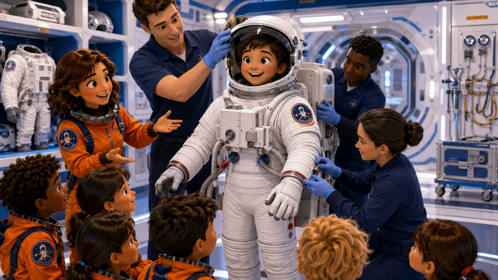

Mission Reading Homework · Step 04
Mission Reading: Spacesuit & Life Support
우주복과 생명유지 장비
수업 전에 읽는 우주 미션 리딩
A spacesuit is not just clothing. It protects the astronaut, gives oxygen, holds safe pressure, and helps the astronaut work outside the spacecraft.
우주복은 단순한 옷이 아닙니다. 우주비행사를 보호하고, 산소를 주고, 안전한 압력을 유지하고, 우주선 밖에서 일할 수 있게 도와줍니다.

Mission Preview: spacesuit and life support training
Before You Start
Read first. Check your suit tomorrow.
In Step 04, you learn that a spacesuit is not just clothing.
A spacesuit is life support.
It helps an astronaut breathe, stay protected, and work safely outside the spacecraft.
A spacesuit is a small spacecraft for one astronaut.
It carries air, protection, and safety systems around the astronaut's body.
Step 04에서는 우주복이 단순한 옷이 아니라는 것을 배웁니다.
우주복은 생명유지 장비입니다.
우주비행사가 숨 쉬고, 몸을 보호하고, 우주선 밖에서 안전하게 일하도록 도와줍니다.
우주복은 우주비행사의 몸 주변에 공기, 보호 장치, 안전 장치를 가지고 다니는 작은 우주선과 같습니다.
Core Idea
What is a spacesuit?
A spacesuit protects the astronaut's body.
It covers the astronaut from head to toe.
It helps keep air, pressure, and temperature safe.
Without a spacesuit, an astronaut cannot work outside the spacecraft.
우주복은 우주비행사의 몸을 보호합니다.
머리부터 발끝까지 감싸 줍니다.
공기, 압력, 온도를 안전하게 유지하도록 도와줍니다.
우주복이 없으면 우주비행사는 우주선 밖에서 일할 수 없습니다.
Life Support System
How the suit helps life
Life support means a system that helps people stay alive.
In a spacesuit, life support gives oxygen and helps remove bad air.
It also helps control temperature.
The astronaut must check life support before going outside.
생명유지는 사람이 살아 있도록 도와주는 시스템입니다.
우주복 안의 생명유지 장치는 산소를 공급하고 나쁜 공기를 밖으로 빼내도록 도와줍니다.
또 온도를 조절하는 데도 도움을 줍니다.
우주선 밖으로 나가기 전에는 반드시 생명유지 장치를 확인해야 합니다.
Suit Parts
Helmet, Gloves, and Boots
HelmetThe helmet protects the head and helps the astronaut breathe.
헬멧은 머리를 보호하고 숨 쉬는 것을 도와줍니다.
GlovesThe gloves protect the hands but must still let the astronaut use tools.
장갑은 손을 보호하지만 도구를 사용할 수 있게 해 줘야 합니다.
BootsThe boots help the astronaut stay safe when moving or standing.
부츠는 움직이거나 서 있을 때 안전을 도와줍니다.
Suit Pressure and Seal
Air must stay inside
Space has no normal air pressure.
A spacesuit must hold safe pressure around the astronaut's body.
Pressure helps the astronaut's body stay safe in space.
A seal keeps air inside the suit.
A seal can be around a helmet, glove, or suit connection.
If the seal is not secure, the astronaut must report it quickly.
Mission Control, my suit seal is not secure. Please advise. Over.
우주에는 지구처럼 정상적인 공기 압력이 없습니다.
우주복은 몸 주변의 압력을 안전하게 유지해야 합니다.
압력은 우주에서 우주비행사의 몸이 안전한 상태를 유지하도록 도와줍니다.
seal은 공기가 우주복 안에 머물도록 막아 주는 부분입니다.
seal은 헬멧, 장갑, 우주복 연결 부분처럼 공기가 새면 안 되는 곳에 있습니다.
seal이 안전하지 않으면 빨리 보고해야 합니다.
System Status
Normal, Warning, Emergency
NormalThe suit is secure.
Life support is working.
My suit is secure. Life support is working. Over.
우주복이 안전하게 고정되어 있습니다. 생명유지 장치가 작동합니다. 보고: 제 우주복은 안전합니다. 생명유지 장치가 작동합니다. 이상.
WarningThe suit has a small problem.
The astronaut must check it again.
We have a suit warning. Please advise. Over.
우주복에 작은 문제가 있습니다. 다시 확인해야 합니다. 보고: 우주복 주의 상태입니다. 지시해 주세요. 이상.
EmergencyThe suit is not safe.
The astronaut needs help now.
Mission Control, we have a suit emergency. Over.
우주복이 안전하지 않습니다. 즉시 도움이 필요합니다. 보고: 관제센터, 우주복 비상 상황입니다. 이상.
Suit Safety Officer
Think Like a Suit Safety Officer
A suit safety officer does three things:
1. Check the suit.
2. Check life support.
3. Report any problem clearly.
우주복 안전 담당자는 세 가지 일을 합니다. 첫째, 우주복을 확인합니다. 둘째, 생명유지 장치를 확인합니다. 셋째, 문제가 있으면 짧고 정확하게 보고합니다.
Key Words
Words to know before Step 04
spacesuitclothing and equipment that protects an astronaut우주비행사를 보호하는 옷과 장비
life supporta system that keeps people alive생명을 유지하게 돕는 시스템
helmetprotection for the head머리를 보호하는 헬멧
gloveprotection for the hand손을 보호하는 장갑
bootprotection for the foot발을 보호하는 부츠
pressurethe force of air around something공기가 누르는 힘, 압력
seala part that keeps air inside공기가 새지 않게 막는 부분
oxygenair we need to breathe숨 쉬는 데 필요한 산소
temperaturehow hot or cold something is얼마나 뜨겁거나 차가운지
securesafe and fixed in place안전하게 고정된
warninga small problem that needs attention확인이 필요한 주의 상태
emergencya serious danger심각한 위험, 비상 상황
Check Your Understanding
Answer in short sentences
- Is a spacesuit just clothing?
- Why does an astronaut need life support?
- What does a helmet protect?
- Why is suit pressure important?
- What does a seal do?
- What should an astronaut do if the suit is not secure?
- What is the difference between warning and emergency?
- 우주복은 단순한 옷인가요?
- 우주비행사에게 생명유지 장치가 왜 필요한가요?
- 헬멧은 무엇을 보호하나요?
- 우주복 압력은 왜 중요한가요?
- seal은 무슨 일을 하나요?
- 우주복이 안전하지 않으면 우주비행사는 무엇을 해야 하나요?
- 주의 상태와 비상 상태는 어떻게 다른가요?
Mission Report Goal
Tomorrow's report
Practice these reports before class. Say them slowly and clearly.
Normal Report:
My suit is secure.
Life support is working.
I am ready for outside work.
Over.
Problem Report:
Mission Control, my suit seal is not secure.
Please advise. Over.
Emergency Report:
Mission Control, we have a suit emergency.
Please advise. Over.
Tomorrow, you will report your spacesuit and life support status to Mission Control.
수업 전에 세 가지 보고 문장을 연습합니다. 정상 보고: 우주복이 안전하고 생명유지 장치가 작동합니다. 문제 보고: 우주복 seal이 안전하지 않습니다. 지시해 주세요. 비상 보고: 우주복 비상 상황입니다. 지시해 주세요.
Parent Homework Check
부모님 숙제 확인
After reading, please ask these short questions. A perfect answer is not the goal. Saying it again is the training.
학생이 글을 읽은 뒤, 아래 질문을 짧게 확인해 주세요. 완벽한 답보다 다시 말해 보는 연습이 중요합니다.
- Is a spacesuit just clothing?우주복은 단순한 옷인가요?한국어 도움: 아닙니다. 생명유지 장비입니다.
- What does life support do?생명유지 장치는 무엇을 하나요?한국어 도움: 산소와 안전한 상태를 유지하도록 도와줍니다.
- What does a seal do?seal은 무엇을 하나요?한국어 도움: 공기가 새지 않게 막아 줍니다.
- Can you say tomorrow's suit report?내일 말할 우주복 보고 문장을 말할 수 있나요?한국어 도움: 정상 보고 문장을 한 번 말해 보게 해 주세요.
- What should you do if the suit is not secure?우주복이 안전하지 않으면 어떻게 해야 하나요?한국어 도움: 당황하지 않고, 확인하고, 짧게 보고합니다.
수업 시간이 되면 Step 04 수업으로 이동하세요.